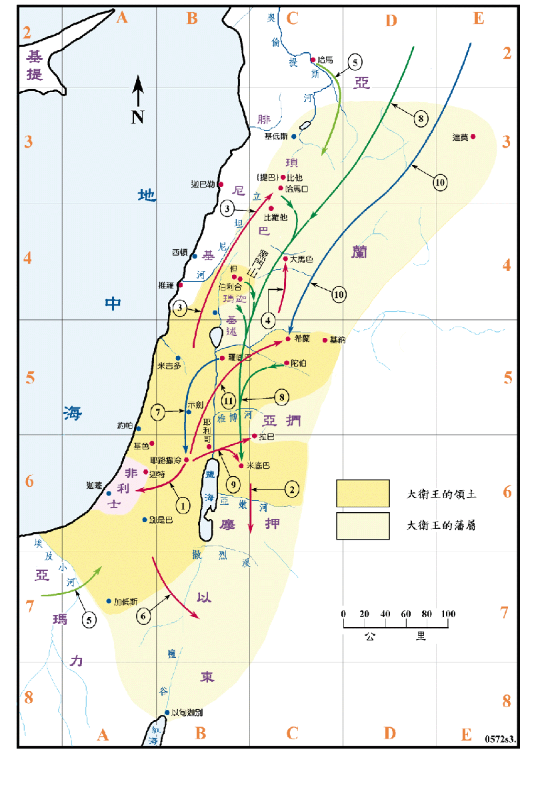

行动线说明
| 序号 | 圣经 | 说明 |
|---|---|---|
| 1 | 撒下8:1，代上18:1 | 大卫征服非利士。 |
| 2 | 撒下8:2，代上18:2 | 征服摩押。 |
| 3 | 撒下8:3-8，代上18:3-4 | 征服琐巴。 |
| 4 | 撒下8:5-6，代上18:5-8 | 征服大马色。 |
| 5 | 撒下8:9-12，代上18:9-11 | 哈马和亚玛力归顺，被征服的各国都进贡。 |
| 6 | 撒下8:13-14，代上18:12-13 | 征服以东。 |
| 7 | 撒下9章 | 大卫恩待约拿单的儿子米非波设，将他从罗底巴接到耶路撒冷来往。 |
| 8 | 撒下10:1-8，代上19:1-7 | 亚扪人召募亚兰人来到拉巴，要攻击大卫。 |
| 9 | 撒下10:9-14，代上19:8-15 | 约押兵分两路，把亚扪人和亚兰人击败。 |
| 10 | 撒下10:15-16，代上19:16 | 亚兰人又从大河那边调兵，聚集在希兰。 |
| 11 | 撒下10:17-19，代上19:17-19 | 大卫领兵到希兰，把亚兰人打败，亚兰就归服。 |
从扫罗直到所罗门的时代，这时中东各大国，如埃及、亚述和巴比伦，都处於国势低落的状态，在迦南留下了权势的真空，对以色列的建国是一个绝佳的机会。大卫是一位有才智及能力的军事家和政治家，他把握此一良机，先统一各支派，再对外用兵，他攻打非利士、摩押、琐巴、大马色、亚兰诸王、亚玛力、亚扪、以东等地，都收为附庸，只有非利士尚留有小块的土地。他又和腓尼基保持友好的关系，其国土之大是前所未有，除了所罗门时代之外，也是后世所不及，是一段非常光辉的时期。